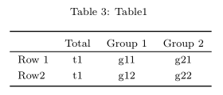
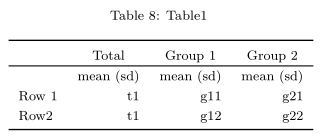
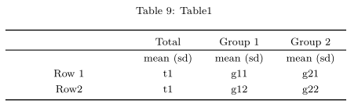

btabler
btabler.Rmd
library(btabler)
#> Loading required package: xtablebtabler is a wrapper for the xtable package which adds some new functionality for merging headers, adding footers etc.
To demonstrate how btabler
df <- data.frame(name = c("", "Row 1", "Row2"),
out_t = c("Total", "t1", "t1"),
out_1 = c("Group 1", "g11", "g12"),
out_2 = c("Group 2", "g21", "g22"))
btable(df, nhead = 1, nfoot = 0, caption = "Table1")
#> \begingroup\fontsize{8pt}{12pt}\selectfont
#> \begin{longtable}{lccc}
#> \caption{Table1} \\
#> \toprule
#> \multicolumn{1}{l}{} & \multicolumn{1}{c}{Total} & \multicolumn{1}{c}{Group 1} & \multicolumn{1}{c}{Group 2} \\
#> \hline
#> \endhead
#> \hline
#> \multicolumn{4}{l}{\textit{continued on next page}}
#> \endfoot
#> \endlastfoot
#> Row 1 & t1 & g11 & g21 \\
#> Row2 & t1 & g12 & g22 \\
#> \bottomrule
#> \end{longtable}
#> \endgroupIn the compiled PDF, this looks substantially better of course…

btabler requires that a few specific LaTeX packages are included in the header of your Rmd or Rnw/`tex’ file:
# .tex
\usepackage{longtable}
\usepackage{booktabs}
\usepackage{float}
\usepackage{array}
# .Rmd
header-includes:
- \usepackage{longtable}
- \usepackage{booktabs}
- \usepackage{float}
- \usepackage{array}For convenience, btabler provides templates for each which can be accessed via use_btabletemplate:
use_btabletemplate("report") # creates report.Rmd in the working directory
use_btabletemplate("report", "Rnw") # creates report.Rnw in the working directory
use_btabletemplate("code/report", "Rnw") # creates report.Rnw in the code directoryAlignment can be changed via the aligntot argument. For example, we could specify that the first column be left aligned and all other columns should be centered aligned:
btable(df, nhead = 1, nfoot = 0, caption = "Table1", aligntot = "lccc")
It’s possible to create new column types in LaTeX and use them in btabler.
The following creates a new column type if put in the LaTeX or Rmd header
# .tex
\newcolumntype{P}[1]{>{\centering\arraybackslash}p{#1}}
# .Rmd
header-includes:
... # other requirements
- \newcolumntype{P}[1]{>{\centering\arraybackslash}p{#1}}This can then be used in btable in the aligntot argument (note that xtable warns about non-standard, adding warning = FALSE to the chunk header might be useful…)
btable(df, nhead = 1, nfoot = 0,
caption = "Table1",
aligntot = "P{3cm}P{1.5cm}P{1.5cm}P{1.5cm}")